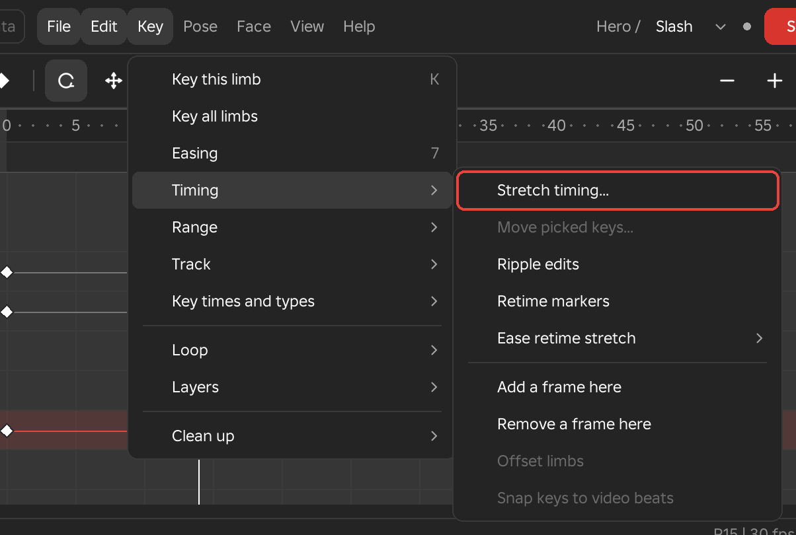
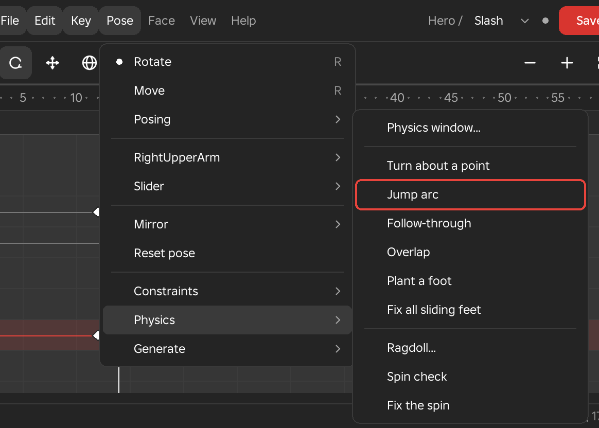
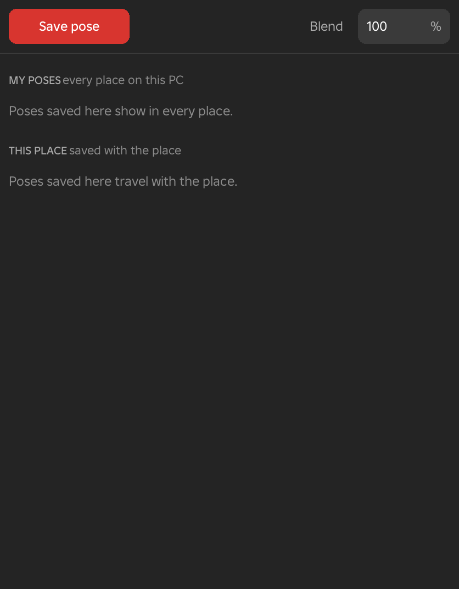
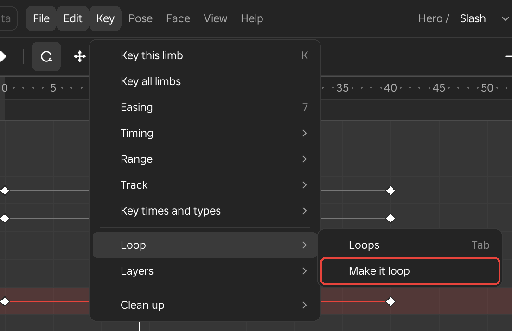
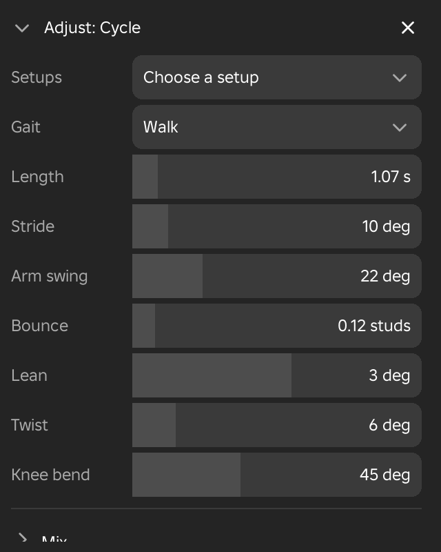
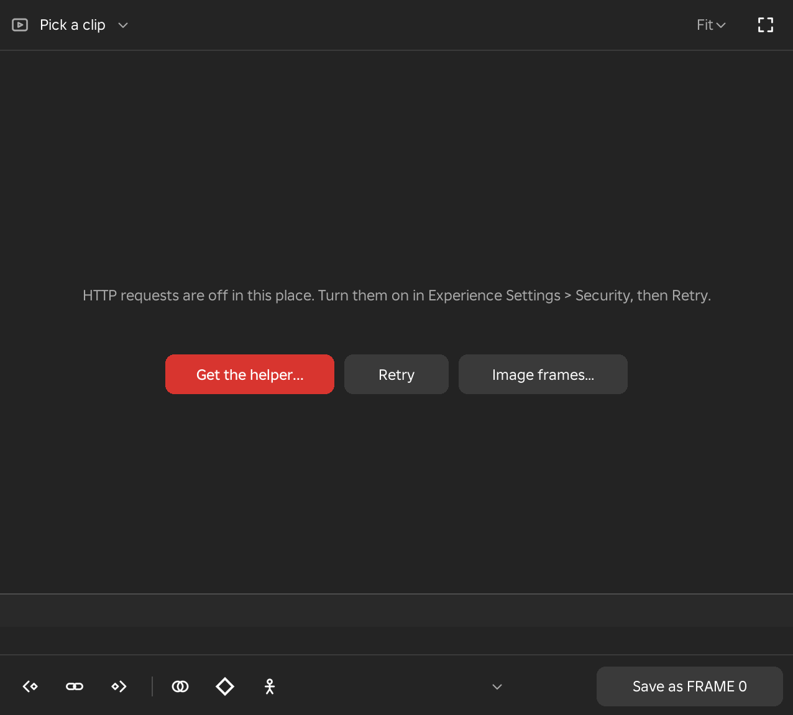
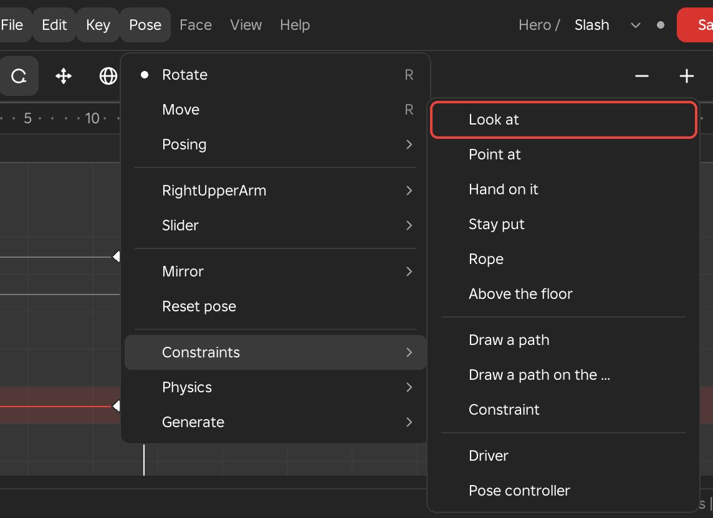
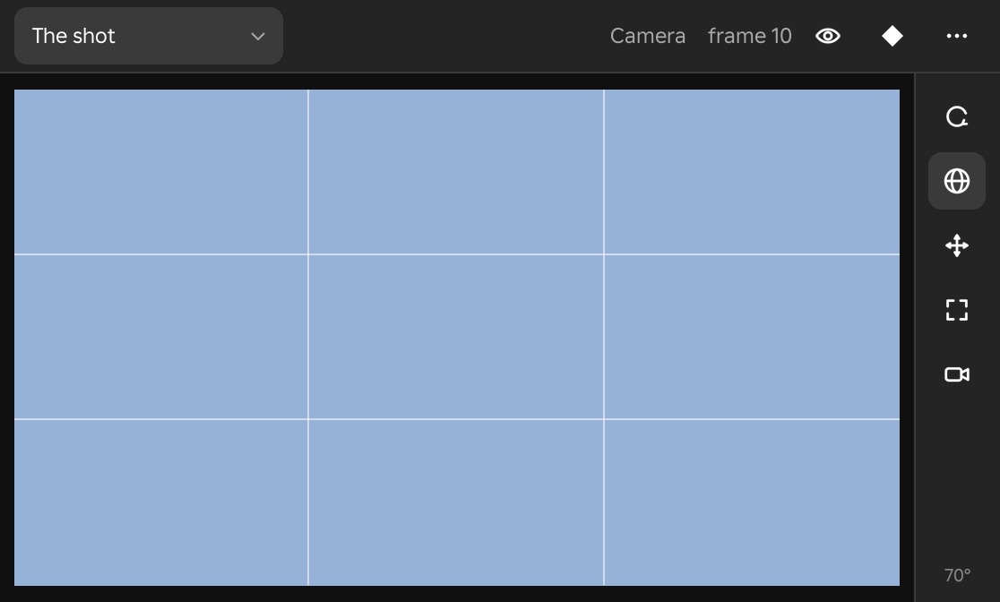
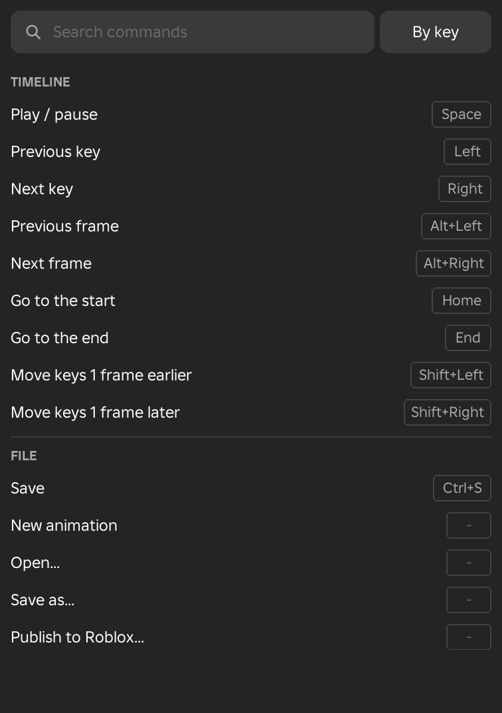

Tutorials
Step by step, for each kind of animation. Each step names the exact menu row; the pictures show the menus and windows where a step is hard to find. Skip any step the animation does not need.
A combat skill or attack
You get: a sword swing, cast, dodge or hit reaction that plays once, with the frames where it can hit marked for your game script.
- Open the clip settings: Inspector > Clip. Set Length (the skill's cast time), Priority to Action, and turn Loops off.
- If you have a video of the move, link it first in the Reference video window (see Copy a move from a video).
- Key only the big poses first: the wind-up, the hit and the recovery. To watch them as held poses, choose View > Playback steps > Keys only; choose Every frame again when the timing works.
- Fix the timing. Drag a box round keys on the timeline to pick them, then drag an end of the box that appears round them to make the swing faster or slower. Or choose Key > Timing > Stretch timing... and type a length.

Key > Timing > Stretch timing... - Shape how each move speeds up and slows down: pick the keys, press 7 (Key > Easing), choose where the move slows (Slow end for a hit that lands hard), then a curve. Pointing at a curve shows it on the rig before you click.

The Easing menu: where the move slows, then how strongly. - Make the arms trail the body: pick the keys and choose Key > Timing > Offset limbs; each limb's keys land a frame or two after the limb above it.
- Add the in-between poses that give a swing its snap: press T by the mouse and move it left or right (the slider, Pose > Slider). Click to key the pose.
- Add weight: Pose > Physics > Follow-through on the arms (they keep moving after the body stops), Pose > Physics > Overlap on the head (it turns a few frames after the body), Pose > Physics > Turn about a point for spins.

Pose > Physics - Keep the feet planted: turn on View > Overlays > Sliding feet marks. Where a red mark shows, pick the foot and choose Pose > Physics > Plant a foot, or Fix all sliding feet for every foot at once.
- If the weapon changes hands, see Pick up, pass, drop or throw an object.
- Mark the frames where it can hit. Switch to the Game data workspace, put the playhead on the first hit frame and choose Game > Hit windows > Add hit window here. A bar appears on the Hit windows row: drag its ends to the first and last frame of the hit.

Game > Hit windows > Add hit window here - Set the hitbox and the data your script reads on the Inspector: the part it moves with (the weapon or the hand), Box or Ball, its size, and fields such as Damage 25 or Knockback 30.

The hit window's page: when, the hitbox, and its data. - For one moment instead of a range (a sound, a spark), choose Game > Add event here... and type a name such as Sound or SpawnVFX.
- Check it: Key > Clean up > Check animation lists each problem at its frame: sliding feet, a limb that jumps in one frame, a limb that stops dead, a curve that passes its key and comes back, a limb through the torso. Click a row to go there; each row's button fixes it; Fix all fixes every one that needs no choice.

Check animation: a row for each problem, each with its fix. - See it as the game will: Game > Play as Roblox will plays it on a see-through copy through Roblox's own Animator. Game > Preview with another clip > Join with plays your idle or run into it.
- Save. If it must play while the character runs, choose Game > Body mask > Upper body: the legs then play the run under it.
- In your game: Game > In the game > Hit windows and foot contacts adds the FramezGameData module, which turns the hit windows into hits (see Hit windows and foot contacts for the code).
Not needed for a skill: Make a cycle, Add breathing.
A hit with effects
You get: a punch with a trail, sparks, a shockwave and an impact frame, all playing in your game when the clip plays.
- Key the punch.
- Pick the arm, then choose Scene > Add > New effect on the arm > Framez starting effects > Hit sparks. The + at the right of the Filter box opens the same Add menu. Add Impact glow, Shock ring and Dust burst the same way.

Scene > Add > New effect on the arm > Framez starting effects - For your own effect instead: New effect on the arm > Trail, Particles or Beam, then set its look in Studio's Properties window. For sparks that streak, set Orientation to VelocityParallel and Squash below 0.
- Put each effect where the hit lands: right-click its row > Place it > Where it hits. Or move its point with Studio's Move tool; the move is keyed at the playhead.
- Tune the look while it plays: right-click its row > Loop around it, change its values in the Properties window, then Stop looping.
- A shockwave: put a Ball part with the ForceField material in the place, pick it in the Explorer and choose Scene > Add > Object picked in the Explorer. Change its Size and Transparency in the Properties window at two frames: each change is keyed.
- An impact frame: right-click the hit frame on the timeline > Impact frame here (also Game > Impact and flash). Its page in the Inspector sets the look: steps of black-and-white or tinted frames, impact lines, camera shake, zoom and a freeze of a few frames.
- In your game: Game > In the game > Effects in the game, once per game. Save, then publish.
An idle or a fidget
You get: a stance that breathes and loops without a jump at the seam, or a head scratch or weapon check that plays from it.
- Inspector > Clip: Priority Idle, Loops on.
- Pose the stance. Save it in View > Windows > Poses (Save pose), and start every idle for this character from it: click its picture to key it.

The Poses window: click a picture to key that pose. - Key the fidget. If you change a pose that is held for several keys, right-click the limb > Carry pose through the hold changes the held keys too.
- Make the last frame meet the first: Key > Loop > Make it loop, Same pose at start and end.

Key > Loop > Make it loop - Add breathing over everything: Pose > Generate > Add breathing. Its values open in Adjust.
- Let the arms settle: Pose > Physics > Follow-through with a low bounce.
- Check the seam and the hand-off: Key > Clean up > Check animation says when the last frame does not meet frame 0. Then Game > Preview with another clip > Join with and Game > Play as Roblox will.
A walk, run, strafe or backpedal
You get: a cycle that loops with planted feet, ready to blend with your other cycles in the game.
- Choose Pose > Generate > Make a cycle. A walk plays at once. In Adjust set Gait (Walk, Run, Strafe or Back), Length, Stride, Arm swing, Bounce, Lean, Twist and Knee bend. It already loops.

Adjust for Make a cycle. - Or start from your own poses: key the contact and passing poses, then Pose > Generate > Cycle from my poses mirrors them into a full cycle.
- Change one side's pose, then right-click the limb > Mirror onto its twin. Or rebuild the second half from the first: Key > Loop > Make it loop, Mirrored halves.
- Find the slides: turn on View > Overlays > Sliding feet marks and Motion paths. Fix them with Pose > Physics > Plant a foot, or all at once with Fix all sliding feet.
- View > Overlays > Centre of mass shows a disc under the body: green over the feet, red where the body would tip.
- Pick the keys of one step and turn on View > Play only the picked keys to loop that step while you fix it.
- For footstep sounds: in Game data, Game > Foot contacts > Find foot contacts marks where each foot lands and lifts. The game hears FootDown and FootUp, valued Left or Right.
- If the game blends it with another cycle (a walk into a run): Game > Preview with another clip > Blend with, pick the other one and drag the blend. If the feet fall out of step, click Match steps. Check the full set with Blend directions....
To see a skill's arms over this run: open the skill, then Key > Layers > Watch only > Under and pick the run.
Copy a move from a video
You get: the body keyed from the person in a video (game footage, a phone video, a dance), as a first pass to clean up.
- Install the Framez Helper once. It reads your videos.
- Open View > Windows > Reference video and pick the clip at its top. No helper: use Image frames from files, a numbered set of PNG or JPG frames.

The Reference video window. - Find the first frame of the move and press the link button. From then on the video follows the timeline.
- Zoom the video until the person fills the white box (wheel to zoom, drag to pan). Turn on Joints to see the tracked skeleton.
- Choose Pose > Generate > Pose from video. It keys the torso, head, arms and legs every few frames.
- Clean up: Key > Clean up > Clean up captured motion smooths the motion and puts the feet on the floor; Key > Clean up > Reduce keys takes out keys it does not need. Fix any flipped limb by hand.
- For a weapon or hand path: place Marks on the video where the tip is, and match the motion path to them.
- Over 3D lays the picture over the rig to match the outline.
Tracking follows one person, and guesses the joints it cannot see. Fast spins filmed side-on need the most fixing by hand.
A dance to music
You get: moves that land on the music's beats.
- Link a video that has the song (as above). Hits in the sound show white on the beats strip over the ruler, still moments red.
- Key the poses roughly, pick them, then Key > Timing > Snap keys to video beats.
- For a wave that ripples down the arms: pick the keys, then Key > Timing > Offset limbs.
- Pick the keys of one move and turn on View > Play only the picked keys while you polish it.
- Key > Loop > Make it loop if it repeats. To sell it as an emote, go on with An emote to sell.
An emote to sell
You get: an emote that passes Roblox's upload check: a standard R15, at most 10 seconds, the body near the root part, nothing moving too fast, uploaded as an Emote.
- Insert an R15: File > Rig > New R15 rig. It stands in front of the camera and opens at once.
- Make the dance (A dance to music). Keep the body near where the character stands: no part more than 5 studs from the root part. Crouch by bending the knees, not by lowering the hips.
- Choose File > Export > Emote.... Each of Roblox's rules is a row: red where Roblox would refuse the upload, grey for what the save leaves out, green where it passes. Click a row to go to its frame.

The Emote window: each rule, and the fix for it. - Fix each red row with its button: Stretch or Trim on Length, Pull back on Too far, Too low or Too fast. Fix all does every one.
- Click Save as emote. It saves NAME_EMOTE beside the rig's saves, and the window shows Roblox's two upload steps.
- Step 1, Open Roblox's upload window: Animation Type Emote, tick Create Animation Object in Workspace, pick the Creator, then Save.
- Step 2, Open the Avatar Item upload: Content Type Avatar Item, Asset Category Emote, then Submit. Roblox charges its upload fee here.
- Save the place: the emote save lives in it.
Needs Studio 737 or later. Uploaded any other way, the upload fails with "missing a valid UGC emote marker".
An animation pack
You get: a character's idle, walk, run, jump, fall, climb and swim as one set, sold on the Marketplace or played by every character in your game.
- Make and save each clip on the same rig. Every clip loops except Jump.
- Choose File > Export > Animation pack.... Name the pack and pick a save for each slot. Idle 2 may stay empty; each idle's weight sets how often it plays.

File > Export > Animation pack... - Click Check. It opens each clip and lists what the Marketplace refuses, each with its fix (Set its loop, Keep only turns, Pull LowerTorso in, Fit and pull back). A fix saves the clip.
- To sell: click For the Marketplace. Each clip becomes a CurveAnimation, picked in the Explorer. Right-click each one > Save to Roblox with the values the window lists. Then right-click the model Studio makes in Workspace > Save to Roblox: Avatar Item, Avatar Animations.
- For your game: publish each clip, then click Use in this game. Every character that spawns plays the pack.
The Marketplace takes R15 packs only, with only LowerTorso moving and no more than 1.5 studs from its start. Use in this game works on R6 and R15.
Jumps, flips and spins
You get: a leap, backflip, roll or spinning slash where the body flies a real arc and lands without sliding.
- Key the take-off pose and the landing pose.
- Choose Pose > Physics > Jump arc: the torso flies an arc between the two poses, at the height you set in Adjust.
- For a flip or a roll: Pose > Physics > Turn about a point turns the whole body about a foot, a hand, the weapon tip or the floor.
- For a spin past half a turn, give the key more turns: pick it, press 7 and type Extra turns.
- Check the air time: turn on Pose > Physics > Spin check. Teal ghosts show the turn and height Roblox physics would give; Fix the spin keys the torso to match them.
- On the landing: the Centre of mass disc over the feet, Plant a foot, and Follow-through on the arms.
A ragdoll fall or a hit reaction
You get: a knockdown, death fall or stagger made by Roblox physics from a push you aim, kept as keys you can change.
- Go to the frame where the hit lands.
- Right-click the limb that is hit > Ragdoll... (also Pose > Physics > Ragdoll...).

The Ragdoll window: the push, the body, how long, then Simulate. - Set the push: click Aim, press on the body where the hit lands and drag the way it goes (a longer drag pushes harder). Or pick Front, Back, Left, Right or Up and type the angles and strength.
- Choose Limp, or Powered to keep part of the pose, with a strength for the head, spine, arms and legs.
- Click Simulate, then scrub the timeline: the purple ghost plays the result.
- To get up again, turn on Blend back and set its frame and length.
- Click Bake: into the keys, or into a new layer you can mute to compare.
- For forces over time (wind, a blast, a pull) and several bodies, open Pose > Physics > Physics window...: pick bodies in its tree, add forces on its lanes, then Simulate and Write keys.

The Physics window: bodies, forces and colliders on lanes.
The rig does not move while it simulates: a copy falls and hits the place's parts. Held objects stay in the hand. R6, R15 and other Motor6D rigs.
Acting: talking, reacting, pointing
You get: a character that looks at what matters and moves with weight, framed the way the shot will be seen.
- Save the shot's view: frame it in the 3D view, then View > Camera > Saved views > Save this view as a new one.
- Turn the head to the camera or a part: Pose > Constraints > Look at. Aim an arm: right-click it > Point at.

Pose > Constraints - Block the poses with View > Playback steps > Keys only, then add Overlap and Follow-through (Pose > Physics).
- Keep gestures you use again in View > Windows > Poses.
- More than one character, a moving camera, lights or sound: A cutscene. Faces: Faces on a classic head.
A cutscene: characters, cameras with cuts, lights, sound and subtitles
You get: a story moment, a boss intro or a short film. Several characters and props on one timeline, filmed by keyed cameras that cut between shots, with lights, sound and subtitles, and a button in your game that plays it.
- Open or start the animation on the first character. Stand the others where they start, with Studio's Move tool.
- Switch to the Scene workspace. Add each other character: Scene > Add > Rig > its name (or the + at the right of the Filter box). Each gets its rows. Add a prop the same way: pick it in the Explorer, then Prop picked in the Explorer.

Scene > Add - Pose a character: click any of its limbs. Its rows open with a "posing" tag and every tool works on it; the others play their keys.
- The first shot: Scene > Add > Camera, from this view. Press C to look through it, fly Studio's camera to frame the shot, and press K to key it. Key it again a few frames later for a push-in.
- Watch the shot while you pose from any angle: View > Windows > Camera preview. Drag inside it to move the camera with the mode picked on its right: Turn, Orbit, Slide, Dolly or Lens. The eye in its header hides everything but the picture.

The Camera preview: the shot, and the five ways to move its camera on the right. - Keep a character framed: right-click the camera's row > Look at > their head. Frame at, on the camera's Inspector page, puts them on a third.
- A walk-in: Scene > Add > Path (click points in the view), click the points on the ground, press Enter. Then right-click the character's Clips row > Walk a path, or right-click a prop > Follow a path.
- A cut: go to the cut's frame and add a second camera. The Shots row shows which camera the game sees; drag where a block starts to move the cut.
- Light: Scene > Add > Light > the lamp. Type Brightness or Colour on its Inspector page to key them.
- Sound: Scene > Add > Sound..., paste the sound id, and drag its block onto the moment.
- Subtitles: Scene > Add > Subtitles, then double-click the Subtitles row to add a line. Type the line and the speaker on the Inspector, pick a Look (Film, Captions, Karaoke, Title, Shout, Whisper, Lower third, Typewriter), and drag the block to time it.

A subtitle line's page: the text, who says it, its look, and how long it shows. - A whole script at once: View > Windows > Subtitle lines, paste lines as
Name: line, one per line (or an .srt file), and add them.
The Subtitle lines window. - Letterbox bars, fades and shake: Scene > Add > Screen effects. Fog, colour and depth of field: Scene > Add > Scene look.
- Save: every character's clip and the scene are saved together. Then save the place.
- Put it in your game: Scene > Put in the game.... Pick how it starts: Button (a button on each player's screen), Touch (a part a player touches), Join, Signal or Code. Motion In the scene needs no upload; Uploaded animations uses your published clips. Click Put in the game, then press Play to try it.

Scene > Put in the game...
To start it from your own script instead, choose Code; ReplicatedStorage.FramezScenes holds a README with the code. See Playing a scene in the game.
Two characters: a grab, a throw or a finisher
You get: one character acting on another, both keyed on one timeline and played together in the game.
- Stand both rigs where the move starts, facing each other. Open the attacker's animation, then Scene > Add > Rig > the other.
- Pose the attacker: reach, grab, lift, throw. Click the other rig's limbs to pose it: grabbed, lifted (move its torso up), thrown. Jump arc and Turn about a point work on whichever one is posed.
- Scrub: both play. Ctrl+Z steps back through both, switching to the one each step was made on.
- A sound on the impact: Scene > Add > Sound..., then drag its block onto the Hit event (it snaps to events and keys).
- Save, then Scene > Put in the game.... In the game, the server places both characters and plays both clips (Playing a scene in the game).
A second rig with the same name is renamed as it joins (Noob2).
Pick up, pass, drop or throw an object
You get: a cup, sword, box or hat that a hand picks up, passes to the other hand or another character, throws, drops and picks up again.
- Pick the object in the Explorer. Right-click the hand that holds it > Hold the picked object. A far object lands in the hand.

Right-click a limb: everything for that limb. - Pose and key the object like a limb.
- At the frame it changes hands: right-click it > Parent to... > the other hand, the head, the torso, a foot, another character's hand, or World (stays put). It does not jump: it keeps where it is, or Snap to it puts it on the new holder.
- Each change is listed in Inspector > Parent: click one to go to it, right-click it to switch between Keep and Snap, blend it over frames, move it to the playhead or delete it.

Inspector > Parent: each change of holder, from its frame. - To throw or drop it: right-click it > Throw or drop.... It flies an arc to the floor and stays there; Bounces makes it bounce and roll off the place's parts.
- Two hands on it: right-click the free hand > Pin > Hand on it.
- Gone from a frame (a dagger thrown away, a sword drawn from nowhere): right-click it > Hide from here, and Show from here later.
- In your game: Game > In the game > Held objects in the game, once per game.
In the game, the object must be on the character on the same joint, held by a Motor6D whose part has the same name. A tool sits in the hand by its Grip; for another object, set the attributes FramezHandle (and FramezTip) on its part.
Faces on a classic head
You get: blinks, a shout on the hit, a smirk at the end, on a head whose face is a Decal.
- Click the Face row's lane, under Head, at the frame the face changes. Point at faces to try them on the rig; click one to key it.
- Back to normal: click the lane a few frames later and pick Own face. A blink: press B at the playhead. Blinks through the whole clip: Face > Face swaps > Add blinks....
- Scrub, then Game > Play as Roblox will: the copy beside the rig changes face as the game will.
- In your game: Game > In the game > Face swaps in the game... > Add it to this game, once per game. Then publish the clip.
Faces on a dynamic head
You get: raised brows, a smile, a frown, a shout, on any head with FaceControls (Roblox avatar heads and MeshPart heads set up for face animation).
- Click the Face row under Head. The Inspector shows the face map: a dot for each part of the face.
- Drag a dot up, down or sideways. Letting go keys what it moved. With Symmetry on (Face > Symmetry) the other side moves too; hold Shift for one side only.
- Or a ready face: Face > Face poses. Point at one to see it, click to key it.

The Face menu. - Save and publish as usual. The face is part of the clip.
A character that talks: lip sync
You get: mouth shapes timed to a voice line, for a short, a cutscene or an NPC's greeting.
- Put the voice on the timeline: Scene > Add > Sound... and its sound id.
- A classic head, once: Face > Mouth > Give the head a mouth. Framez's own mouth shapes and eyes show at once; pick other images in Mouth chart.... A dynamic head needs nothing.
- Choose Face > Lip sync..., or right-click the sound's block > Lip sync to this sound. Type the line for a closer match, then click Make lip sync.

Face > Lip sync... - Scrub or play. A wrong shape: right-click its block on the Lip sync row and pick another.
- Save. A classic head also needs Game > In the game > Face swaps in the game... once per game.
Act the face to a webcam
You get: your own expressions and talking on the character's face, faster than keying them.
- Put the playhead where the take starts. Choose Face > Capture from webcam...: the capture page opens in your browser.
- Allow the camera, press Record (3, 2, 1), act, then Stop. Up to 60 s. Again records another take.
- Click Use this take in the browser, then Place at frame in Framez. One Ctrl+Z takes it all back.
Test it in the game
You get: the clip on your player's character in Play, with the game's priority and fades, on other body types, through the game's camera, and compared with the last save.
- In the Game data workspace, choose Game > Test bench....

Game > Test bench...: the Game tab. - Game tab: pick how it plays (Slot: Action on a key, Idle, Walk, Run, Jump, Fall, Climb or Swim), its Key, Priority, fades, weight and speed. Click Try in the game, press Play in Studio, and press the key. Changes in Framez reach the playing character as you make them.
- Transitions tab: the clips before and after it on a strip. Drag a block for how long it plays, its left edge for the fade into it.
- Bodies tab: the clip on R15 Classic, Rthro, Slender, a scaled body or your avatar, side by side. Red marks show where a hand or foot goes through the body or under the floor.
- Camera tab: Free, Third person, First or Shoulder, with its distance and field of view, while Framez plays.
- Compare tab: the clip against Roblox's playback, the last save or another save, as a ghost, side by side or on the rig.
For a quick look without Play: Game > Play as Roblox will.
Work on it in Blender
You get: the clip on an armature in Blender, edited with Blender's tools, and back in Framez as keys.
- In Framez: File > Export > Send to Blender.
- In Blender: press N in the 3D view, open the Framez tab, click Get from Framez. You get an armature with a bone per joint.
- Edit in pose mode. Constraints and IK work.
- In Blender click Send to Framez. In Framez: File > Import > Get from Blender. One Ctrl+Z puts the clip back as it was.
- To see each edit in both at once: File > Export > Live link with Blender, and Live in Blender's Framez tab.
Events, weapon switches, face keys, hit windows and foot contacts travel as timeline markers and follow retimes. Layers, clip blocks and curve modifiers stay in Framez.
Start from an existing clip
You get: a catalog animation, an emote, a clip made for another rig, a Mixamo or mocap file, or a Moon Animator 2 project, as keys on your rig.
- Open or start the animation it goes into, on the rig it will play on.

File > Import - A Roblox animation: File > Import > Roblox animation.... Paste its asset id or link, or pick one already in the place. R6 clips go onto R15 rigs and R15 onto R6.
- An FBX or BVH file (Mixamo, Unreal, mocap): File > Import > FBX or Mixamo clip.... In Blender's Framez tab click Import a clip... and pick the file. Back in Framez: File > Import > Get from Blender. From Mixamo, download FBX Binary, Without Skin, and tick In Place for walks and runs.
- A Moon Animator 2 save in this place: File > Import > Moon Animator 2 file.... Other rigs, cameras, parts and markers come in as scene items and events.
- Clean up: Key > Clean up > Reduce keys, Pose > Physics > Plant a foot where feet slide, Key > Loop > Make it loop for cycles.
Roblox gives only animations the signed-in account may use: its own, its groups' and Roblox's catalog ones.
Blend, layer and aim with Roblox's Animation Graphs
You get: a preview of how Roblox mixes your clips in the game (a walk into a run by speed, breathing over everything, the upper body aiming where the player looks), played by Roblox's own Animator on a see-through copy beside the rig.
- Walk into run: open the walk, then Game > Preview with another clip > Blend with > the run. Drag Blend value from 0 to 1.
- Feet out of step: the ruler in the box shows where each foot lands in each clip. Match steps retimes the walk to the run's foot landings.
- Every direction: Game > Preview with another clip > Blend directions... with the idle, forward, back, left and right cycles. Drag the pad to steer.
- A layer over anything: make the breathing or recoil over the stance, then File > Export > Save as additive... with the stance's frame as the reference. Watch it over any clip with Game > Preview with another clip > Add on top.
- Aiming: on the stance, File > Export > Aim offset poses... saves nine poses and aims them live: drag Yaw and Pitch.
- Build the game's graph in Roblox's Graph Editor (Avatar tab) from the published clips.
R15, creatures and other rigs
What changes when the rig is not an R6, and how to make any model animatable.
- A new rig: File > Rig > New R6 rig, New R15 rig, or your avatar as R6 or R15.

File > Rig - An R15 from Studio's Avatar tab is joined with AnimationConstraints: Framez offers to give it Motor6Ds between the same attachments. Undo puts the AnimationConstraints back.
- A model with no joints (a door, a chest, a creature): pick it in the Explorer, then File > Rig > Rig a whole model. Two parts only: pick the holder, then the part that moves, and Join selected parts....
- A creature or a renamed character: File > Rig > Map parts... says once which part is which. Click Auto map, then fill any red dot: click it, then the part in the 3D view. Then IK, mirror, pins, the generators and Import work on it. A tail or wing: Add chain.

File > Rig > Map parts... - A skinned mesh (one mesh with bones): click the model and open an animation. Its bones show through the body; click a bone, or the skin over it, to pick it. Every tool works on bones.
- Many joints: the track list groups them (Body, Tail, Thigh.L). Click a group to fold it, double-click to key every joint in it.
Your own keyboard shortcuts
You get: your own key on any command, or the key set you know from another tool.
- Right-click any command in a menu, or in Find a command (Ctrl+K), > Change shortcut..., then press the keys.
- Every command at once: Edit > Preferences > Keyboard shortcuts.... Search by name, or click By key and press keys to see what they do. Click a key to press a new one.

Edit > Preferences > Keyboard shortcuts... - Start from: Framez, Blender or Moon Animator 2 key sets. Reset all goes back to the set you started from.
- Save mine to this place... keeps your keys in the place for everyone working in it.